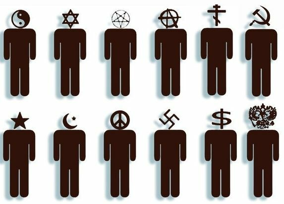

How did humans conquer the world, and why does it matter to us?
How did it happen that Homo sapiens subordinated the world to itself?
Terrible day to everyone!
I would like to start with an important question that Yuval Noah Harari poses to the reader in his book Homo Deus: how did it happen that Homo sapiens came to dominate the world?
At first glance, this question may seem rather trivial, and indeed, after several pages, the author offers their own perspective on the answer. That’s where we’ll start, without immersing you, dear reader, into the details of Yuval’s reflections on all the aspects of human-animal similarities and differences.
Strangely enough, most people living in modern cities and enjoying the full array of privileges of Homo sapiens rarely ponder how they came to occupy such a dominant position on planet Earth. It is alarming that a vast number of humans around us still seriously regard our species as something divine, created by a supernatural entity that supposedly handed over to us countless living beings and the entire planet as agricultural real estate.
If you’ve become detached from society and don’t take my word for it, open a Christian or Islamic calendar and visit a local church or mosque during the next religious holiday. The level of obscurantism in modern society in 2022 is both shocking and terrifying.
Let’s leave the believers to their mental deviations and perversions. Let’s move on to more substantial facts.
So, why did Homo sapiens become the rulers of Earth?
Those whose minds haven’t decayed to the point of believing in the divine chosenness of bald apes usually attribute this dominance to intelligence.
That’s a more interesting viewpoint, but according to Harari, intelligence alone is not the reason why a particular species ascended to dominate an entire planet.
The author rightly points out that humans possessed high intelligence millions of years ago and also used tools. Incidentally, other animals also use tools, yet they somehow haven’t built missile systems or started wars.
Harari’s valid observation that ancient humans (e.g., 20,000 years ago) had more developed intellects and better production skills completely undermines this simplistic notion of our superiority over other creatures as exceptional intellectual engineers.
If you have doubts, just consider that a Paleolithic human had to know dozens of animal species around them, their habits and behaviors, hundreds of plants and herbs and their effects on the body, and how to create clothing and tools for themselves—without the help of Chinese or Indian children eagerly doing it for them, and so on.
Any ignorance meant death. A very strict examiner.
So how did we conquer everyone?..
Yuval Harari answers this as follows: through highly flexible and advanced social interaction! The ability of sapiens to unite into groups and cooperate with vast numbers of individuals elevated us to the pedestal of world conquerors.
We surpassed ants and bees in social interaction because, as mammals, we could reorganize structures of cooperation faster and more flexibly. This very trait—our ability to collaborate with virtually unlimited numbers of our own kind—handed Earth over to Homo sapiens on a silver platter.
But how does such interaction occur? What drives it? What sustains it?
There is a direct and comprehensive answer to all of this: myth.
The ability for abstract thinking, which transports us from the realm of reality into a world of illusions and imagined constructs, is the only thing that can surpass our natural limit for perceiving others who are different from ourselves—a limit, by the way, of approximately 150 individuals.
Intersubjective entities — something that exists outside objective reality but also beyond the subjective perception of a single individual — serve as the gateway to the world of large communities. A nation, a religion, an ethnicity, or an ideology are good examples of this.
It is important to note, as the author rightly observes, that small groups, unlike large ones unified by intersubjective entities, are predominantly egalitarian.

This is confirmed by numerous studies (for example, those of Margaret Mead) by anthropologists regarding hunter-gatherer tribes, where hunters shared food with all members of the tribe because the survival of the group depended on cooperation within the small unit. Dissatisfaction from one or several members of the tribe posed a serious problem when there were only a few dozen of you. Primatologists and researchers in bio- and zoosemiotics provide strikingly similar findings.
Gorillas and chimpanzees clearly recognize when someone nearby receives more food or a tastier treat (watch the video about the experiment with two chimpanzees, a cucumber, and grapes).
Larger human collectives have their own laws of development and existence, and within these communities, the role of the individual is completely neutralized, power over the decision-making process is alienated, and life often becomes subordinated to the mere existence of the intersubjective entity itself.
It is fair to conclude that, from the perspective of the individual's role and importance, large Homo sapiens collectives are authoritarian in their essence.
I think we’ll wrap up our exploration of the theses presented by Yuval and try to consider: why do we need this information at all?
Extremely important knowledge, capable of fundamentally redirecting our resources to attack the true enemy of individuality and equality!
Isn’t such a malicious entity the nation, plunging you into existence as 1/20,000,000 of an unknown, ephemeral organism that determines how you should live and how you should die?
If you're Ukrainian, you must give your life for some state; if you're Russian, you must go kill strangers for another one...
Religion nullifies the individual in favor of moral teachings invented thousands of years ago, while a corporation dictates the rules by which and the space in which you must spend half your life (work).
Here, I want to present an idea that was prompted by the theses in Homo Deus.
Inter-subjective entities serve as a reference point for reality. The modern world first takes shape in some collective ether, and only later does it become an oppressive environment of objects and circumstances for the individual. Harari even rightly provides several examples of how reality tends to yield before the unwavering force of mythological constructs.
Let me give my own example: Didn’t Copernicus' heliocentric system and his followers initially falter and burn in the fire before the unshakable authority of the church’s opinion?
Bruno opposed the Aristotelian-Ptolemaic worldview that prevailed in his time, counterposing it with Copernicus' system, which he expanded upon, drawing philosophical conclusions and pointing to specific facts that are now considered indisputable by science: that stars are distant suns, the existence of celestial bodies within our Solar System that were unknown in his time, and that the universe contains an innumerable number of bodies similar to our Sun.
So, what should we do? Naturally, I am addressing those for whom the ideals of self-realization, individualism, rich and vibrant ecosystems, and biological diversity matter. Those whose process of self-mastery calls out to them in hopes of returning.
Radical anti-civilizational thought has always led its followers down paths closely aligned with the ideas and actions of Theodore Kaczynski, the deeds of the Luddites of the distant 19th century, the warriors of Earth Above All, and other bold souls.
This is just, this is deservedly respected, and it is necessary for all of us as part of the struggle, as a way to form ourselves.
However, we must not forget to strike not only at the claws and tentacles of Leviathan, which are its factories, slaughterhouses, power plants, research centers, and cities.
The strike must be delivered to the very heart of the hungry monster – to the concepts that condition its existence.
Any idea capable of stripping individuality and offering some benefit in exchange for losing oneself in a thoughtless mass, whether it's the idea of the metaverse or anarcho-communism, must be attacked and destroyed!
We have no choice but to be consistent anti-nationalists, anti-Christians, anti-capitalists, anti-socialists, and anti-humanists.
Interaction only in small groups, ideological and symbolic attacks against everything mass and generalizing – this is the clear and unmistakable goal for that very poetic terror described by H. Bey.
The tactic of sabotage in relation to the mythologies of large communities is no less lethal, and perhaps even more necessary, than the attack on the critical infrastructure of human high-tech civilization.
We can chop off as many heads of the hydra of progress as we like, it will grow them back in doubled or tripled numbers. But we at least have a chance to try and strike at the essence of progress and domination – at the myths of united humanity.
Long live Chaos and fragmentation as the only path to liberation!